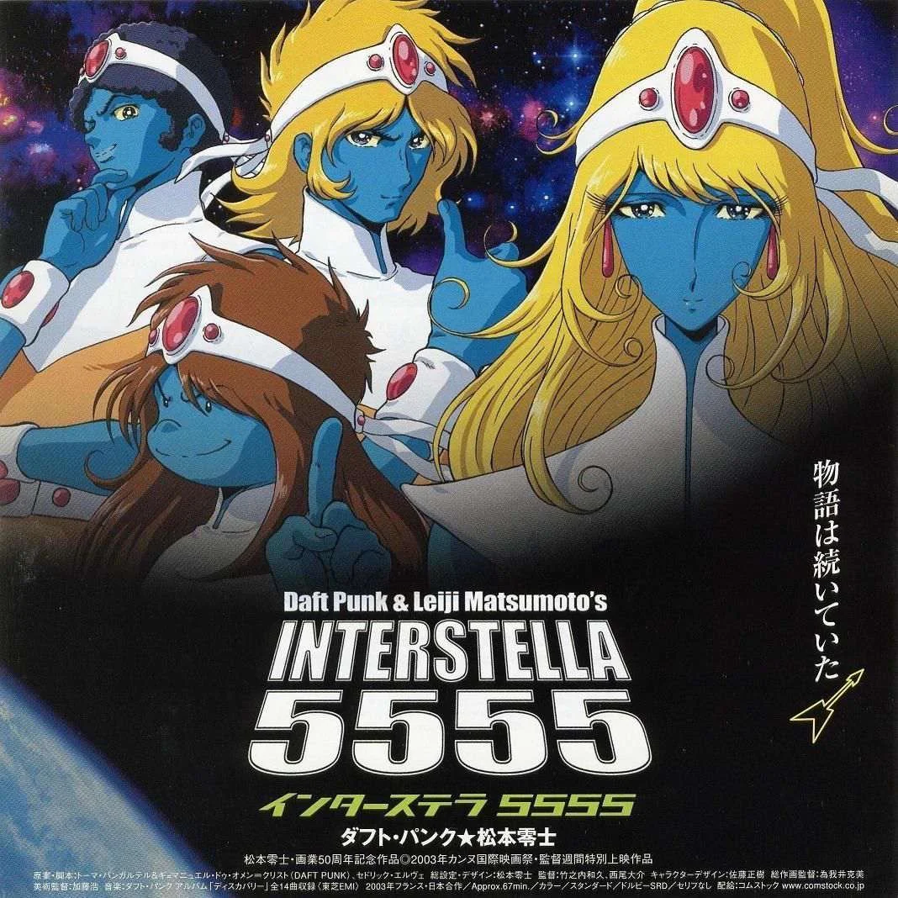

CINÉMA / 2003

Film d'animation
Interstella 5555
Réalisé par Kazuhisa Takenouchi sous l’œil averti du légendaire Leiji Matsumoto, Interstella 5555 offre une illustration narrative continue et muette des 14 pistes de Discovery. De One More Time à Too Long, le film suit l'odyssée spatiale et terrestre de la formation alien "The Crescendolls".
Durée : 65 min • Anime